Taller 6: Teledetección e imagenes satelitales
Introducción a la Tecnología de Información Geográfica (IMSE1014)
1 Introducción
En este taller los estudiantes aprenderán cómo visualizar e inspeccionar imágenes multiespectrales en QGIS. Utilizarán herramientas de procesamiento de datos QGIS para calcular índices vegetacionales que son usados para el monitoreo del estado de desarrollo de la vegetación. Para esto utilizará la calculadora raster de QGIS, herramienta que permite realizar operaciones aritméticas y el uso de funciones más complejas con datos raster. Este taller incluye las siguientes actividades:
- Actividad 1: Visualización e inspección de datos multiespectrales satelitales y aéreas.
- Actividad 2: Cálculo de índices vegetacionales
- Actividad 3: Tarea: Creación de mapa
2 Objetivo: Aprender lo básico del uso de QGIS para teledetección.
El análisis de imágenes es uno de los mayores usos de la teledetección, especialmente con imágenes que han registrado longitudes de onda más allá del espectro visible. Existen paquetes de software patentados diseñados específicamente para el trabajo de teledetección, como ENVI y ERDAS Imagine. QGIS ahora se puede usar en combinación con dos softwares adicionales FOSS4G, SAGA y GRASS, para también realizar análisis de imágenes. SAGA y GRASS son software independientes que se pueden instalar por separado. Sin embargo, las principales herramientas de análisis de ambos ahora se incluyen con QGIS. Esto significa que no se requieren instalaciones adicionales para utilizar las herramientas de análisis GRASS y SAGA a través de QGIS.
3 - Actividad 1: Visualización e inspección de datos multiespectrales satelitales y aéreas.
Hay muchas formas de ver datos de imágenes multiespectrales Aquí explorará algunas opciones de visualización para una imagen multiespectral en QGIS. 1. Abra QGIS. 2. Haga clic en el botón Agregar capa ráster y navegue a la carpeta Taller6/data/raster. 3. Seleccione el archivo llamado S2B2A_20230423_096_19HCC_BOA_10_crop y haga clic en Abrir.
Este archivo corresponde a una imágen satelital Sentinel-2 que ha sido corregida atmósfericamente y se encuentra lista para ser utilizada. Esta imáge ráster tiene un sistema de referencia de coordenadas definido (CRS). Verifique a que SRC corresponde. Este ráster está en UTM, zona 19 Sur, WGS84 (epsg:32719).
La imagen se agregará a QGIS (se muestra en la figura a continuación). Esta es una imágen Sentinel-2 del 23 de abril del año 2023 alrededor del santuario cerro Poqui en la región de O’Higgins, Chile.
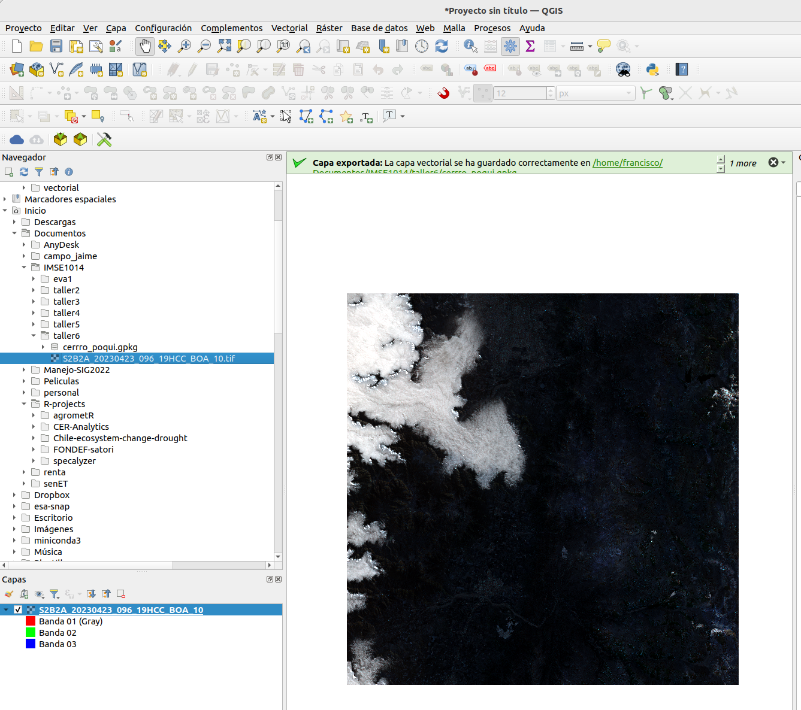
- Guarde su proyecto de QGIS en su carpeta de taller6 como
taller6.qgs - Haga doble clic en el nombre de la capa en el panel Capas para abrir las Propiedades. Haga clic en la pestaña
Información
La información de la capa muestra el nombre de la capa, dónde se almacenan los datos en su computadora y el número de columnas (10980) y filas (10980). Como el SRC está definido para la imagen, el SRC aparece en la lista del Sistema de referencia de coordenadas.
- Haga clic en la pestaña
Simbología
Esta imagen tiene once bandas. Cada banda representa un segmento del espectro electromagnético. En este caso, las bandas se Sentinel-2 corresponden a las que se muestran a continuación:
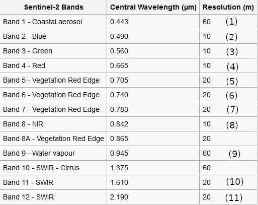
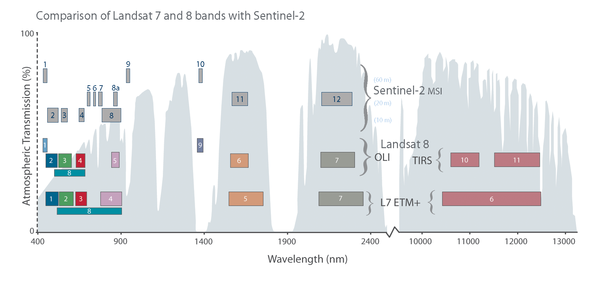
Las once bandas que tiene la imágen que usted abrió en QGIS, corresponden a la que se muestran entre paréntesis en la columna resolución. Se exluyeron la banda 8A y la 10.
Cuando una imagen tiene varias bandas de color, QGIS se predetermina a una representación de color multibanda de esa imagen. Los colores en el monitor de su computadora se crean combinando tres canales de color: rojo, verde y azul (RGB). Al seleccionar tres bandas de una imagen multibanda e iluminarlas con luz roja, verde o azul, creamos una imagen en color. El procesador de color multibanda por defecto muestra la Banda 1 a través del canal rojo, la Banda 2 a través del canal verde y la Banda 3 a través del canal azul. Sin embargo, podemos cambiar qué bandas se muestran a través de qué canales.
- Haga clic en la flecha desplegable para la Banda roja y cámbiela a Banda 4 (red), la banda verde a la banda 3 y la banda Azul a Banda 2, (consulte la figura a continuación).
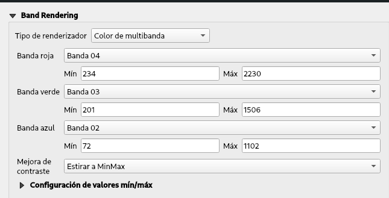
- Haga clic en Aplicar y mueva la ventana Propiedades de capa para que pueda ver el ráster.
Nota: La diferencia entre usar Aplicar y usar Aceptar. Al hacer clic en Aceptar, se guardan los cambios y se cierra la ventana de diálogo. Aplicar guarda los cambios y deja la ventana abierta. Si desea cambiar una configuración, vea el resultado y cambie otra configuración, use Aplicar.
- La imagen ahora debería verse como la figura de abajo. Esta combinación de bandas crea lo que se conoce como un compuesto de color real, tal como una foto.
Color verdadero RGB(4,3,2): El compuesto de color verdadero utiliza bandas de la luz visible en el rojo (B04), verde (B03) y azul (B02) en los canales de color rojo, verde y azul correspondientes, lo que resulta en un color natural, que es una buena representación de la Tierra como la vemos naturalmente.
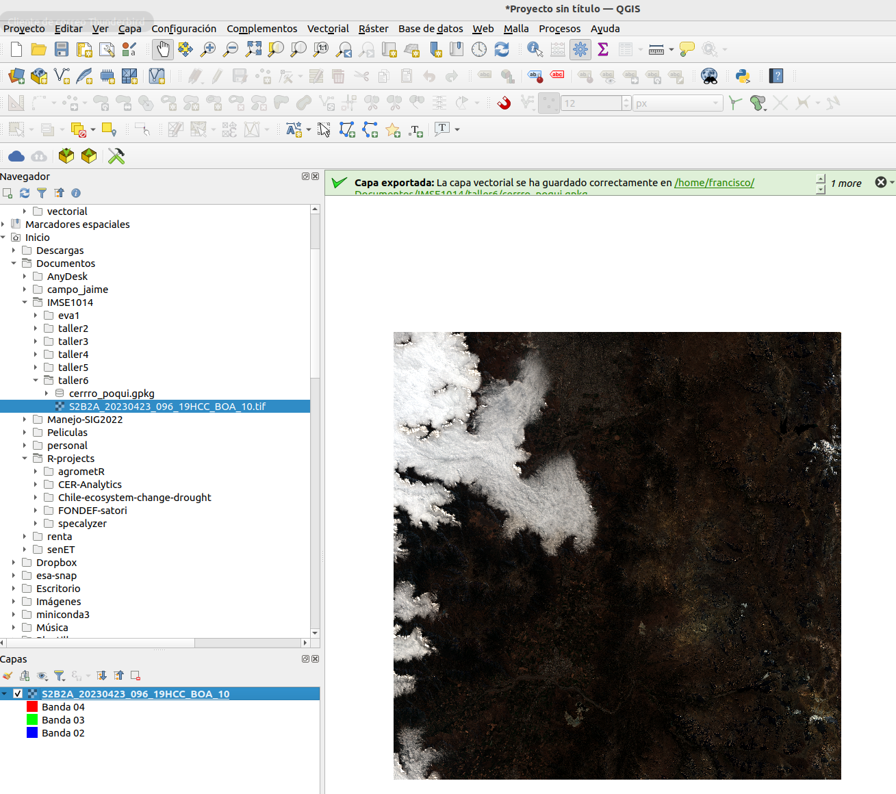
Pero además podemos realizar distintas combinaciones de bandas para resaltar caractéristicas que no son apreciables en el espectro del visible (rojo-verde-azul).
Exploraremos las siguientes composiciones de combinaciones de bandas.
Falso color RGB(8,4,3): Las imágenes en color falso se muestran en una combinación de banda estándar cercana al infrarrojo, rojo y verde. La composición de falso color que utiliza bandas de infrarrojo cercano, rojo y verde es muy popular. Se usa más comúnmente para evaluar la densidad y la salud de las plantas, ya que las plantas reflejan el infrarrojo cercano y la luz verde, mientras absorben el rojo. Como reflejan más el infrarrojo cercano que el verde, la tierra cubierta de plantas aparece en rojo intenso. El crecimiento más denso de la planta es rojo oscuro. Las ciudades y el suelo expuesto son grises o tostados, y el agua aparece azul o negra.
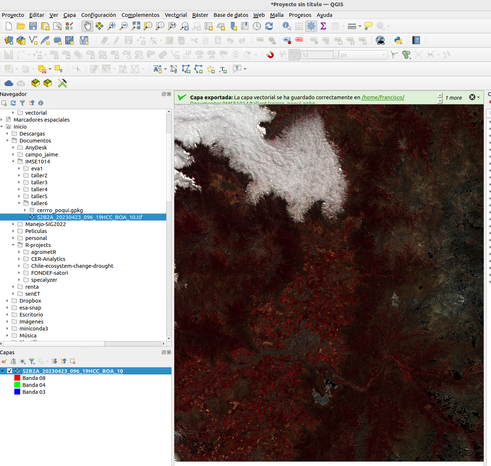
La pestaña Simbología también le permite ajustar el Contraste. Esta configuración le ofrece opciones para modificar la apariencia de la imagen cuando se usa en combinación con la configuración de valores mínimos / máximos de carga. Cada banda tiene valores de 0-65535 (16 bit). De manera predeterminada, el renderizador está configurado para usar valores de corte de conteo acumulativo del 2% al 98%. Esta configuración elimina el 2% inferior y superior de los valores. Muchas imágenes tienen algunos valores de datos muy bajos y altos. Estos valores de datos periféricos pueden eliminarse utilizando la opción de corte de conteo acumulativo. La mejora de contraste está configurada por defecto Estirar a MinMax. Esta configuración escala los colores entre los valores mínimo y máximo. La imagen se vuelve un poco más brillante (ver la figura a continuación) porque los colores ahora se extienden a través del rango de valores. Ambos están aplicando un estiramiento y eliminando el 2% inferior y superior de los valores con la configuración de corte de conteo acumulativo predeterminado.
La configuración de precisión le permite estimar el rango de valores de una muestra u obtener los valores reales. Obtener valores reales puede llevar más tiempo ya que QGIS tiene que mirar todos los valores de la imagen, en lugar de una muestra.
- También puedes mirar una banda individual. Cambie el tipo de renderizado a
gris monobanda. Elija la banda 8 como la banda gris. Establezca la mejora de contraste en Estirar MinMax. Haz clic en Aplicar.
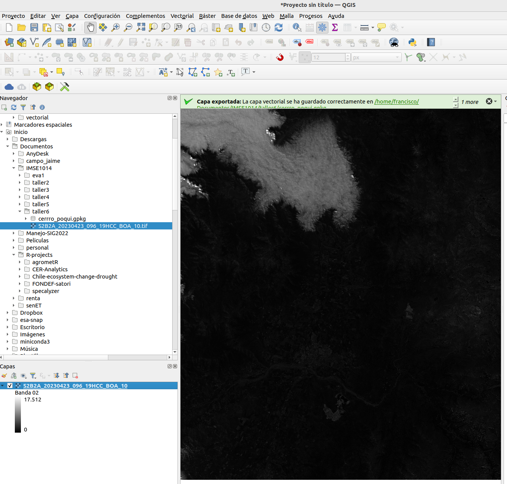
Haga clic en la pestaña
Pirámides. Los conjuntos de datos ráster pueden ser muy grandes. Las pirámides ayudan a renderizar imágenes grandes más rápidamente. Sin ellos, QGIS intentará renderizar cada píxel en una imagen aunque su monitor no tenga la resolución suficiente para mostrar cada píxel. Las pirámides son versiones de menor resolución de la imagen que aumentarán el rendimiento. Esta imagen en particular es pequeña, por lo que no construirá ninguna ahora.En las Propiedades de capa, haga clic en la pestaña Transparencia.
Con la configuración de Transparencia global puede controlar la transparencia de toda la imagen.
También puede definir valores de imagen que desea que sean transparentes. En la pestaña Transparencia, haga clic en el botón Agregar valores de la pantalla y luego haga clic en el rectángulo negro en el mapa. QGIS medirá los valores de las tres bandas en las que hizo clic y los ingresará en la lista de píxeles transparentes.
Haga clic en la pestaña Histograma.
Aquí puede ver la distribución de los valores de datos en su ráster. Si se trata de una imagen de varias bandas, puede ver los datos de cada banda. El histograma se genera automáticamente cuando abre esta pestaña (consulte la figura a continuación). Puede guardar el histograma como una imagen con el botón Guardar trazado.
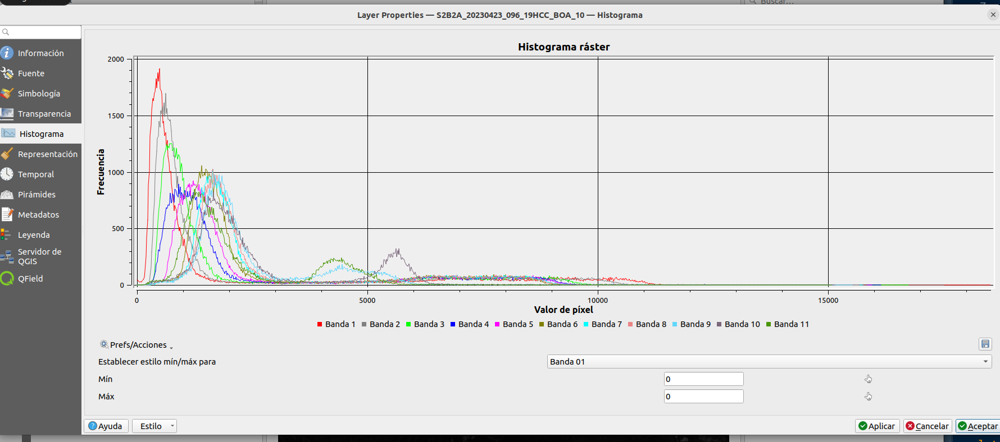
4 Actividad 2: Cálculo de índices vegetacionales.
La vegetación absorbe la radiación solar en diferentes bandas, es decir, en diferentes rangos de frecuencia y longitudes de onda, y emite un porcentaje diferente de la misma en ellas. El porcentaje de radiación refractada en bandas específicas, como infrarrojo cercano (NIR), rojo (RED) e infrarrojo de onda corta (SWIR), varía con la salud de la planta y el estrés hídrico.
4.1 Índice de Vegetación de Diferencia Normalizada (NDVI)
El índice de vegetación más utilizado es, sin duda, el NDVI (Índice de vegetación de diferencia normalizada): describe el nivel de vigor del cultivo y se calcula como la relación entre la diferencia y la suma de las radiaciones refractadas en el infrarrojo cercano y en rojo. eso es como:
\[NDVI = \frac{NIR-RED}{NIR+RED}\]
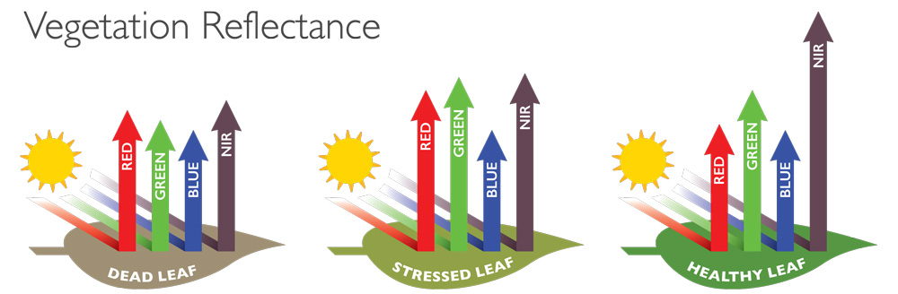
La interpretación del valor absoluto del NDVI es altamente informativa, ya que permite el reconocimiento inmediato de las áreas de la granja o campo que tienen problemas. El NDVI es un índice simple de interpretar: sus valores varían entre -1 y 1, y cada valor corresponde a una situación agronómica diferente, independientemente del cultivo (Tabla 1).
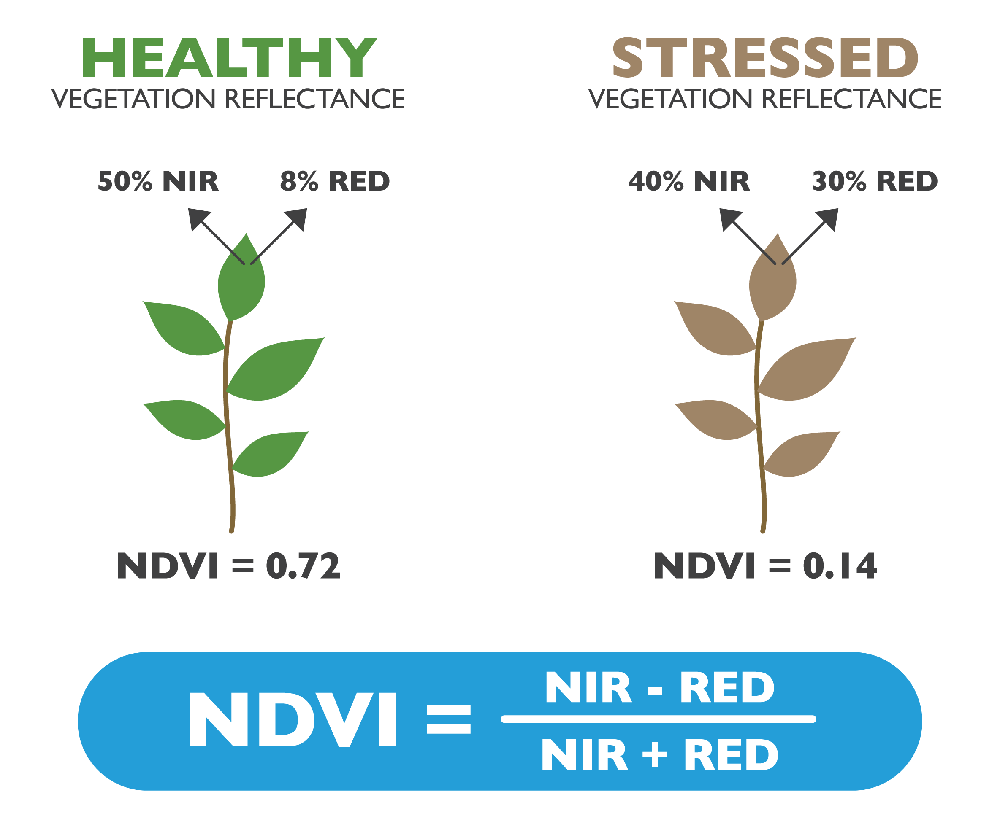
| NDVI | Interpretación |
|---|---|
| 0 – 0-1 | Suelo descubierto |
| 0.1 – 0.2 | Casí ausente de vegetación |
| 0.2 – 0.3 | Muy poca cubierta de vegetación |
| 0.3 – 0.4 | Poca cubierta de canopia y bajo vigor o muy baja cubierta de la canopia y alto vigor |
| 0.4 – 0.5 | Cubierta de canopia media y bajo vigor o baja cubierta de canopia y alto vigor |
| 0.5 – 0.6 | cubierta de canopia media y bajo vigor o cubierta de canopia media-baja y alto vigor |
| 0.6 – 0.7 | media alta cubierta de canopia y bajo vigor o cubierta de canopia media y alto vigor |
| 0.7 – 0.8 | Alta cubierta de la canopy y alto vigor |
| 0.8 – 0.9 | Muy alta cubierta de canopia y muy alto vigor |
| 0.9 – 1 | Cubierta de la canopia completa y muy alto vigor |
El NDVI promedio de un campo varía según la variedad y la etapa fenológica del cultivo.
En un bosque donde se tiende a estar en la misma etapa fenológica, las áreas con un valor de NDVI significativamente más bajo que el promedio presentan problemas en el desarrollo vegetativo, por ejemplo:
- estrés nutricional,
- ataques parasitarios
- daño por granizo o escarcha.
4.2 Índice de humedad de diferencia normalizada (NDMI)
El NDMI (Índice de humedad de diferencia normalizada) describe el nivel de estrés hídrico del cultivo y se calcula como la relación entre la diferencia y la suma de las radiaciones refractadas en el infrarrojo cercano y SWIR, es decir:
\[NDMI = \frac{NIR-SWIR}{NIR+SWIR}\]
La interpretación del valor absoluto del NDMI hace posible reconocer de inmediato las áreas de la granja o campo con problemas de estrés hídrico. El NDMI es fácil de interpretar: sus valores varían entre -1 y 1, y cada valor corresponde a una situación agronómica diferente, independientemente del cultivo (Tabla 2).
| NDMI | Interpretación |
|---|---|
| -1 a -0.8 | Suelo desnudo |
| -0.8 a -0.6 | Cubierta del canopia casi ausente |
| -0.6 a -0.4 | Cubierta de canopia muy baja |
| -0.4 a -0.2 | Cubierta de canopia baja, cubierta de cubierta seca o muy baja, húmeda |
| -0.2 a 0 | Cubierta de canopia media-baja, alto estrés hídrico o cubierta de cubierta baja, bajo estrés hídrico |
| 0 a 0.2 | Cubierta de la canopia promedio, alto estrés hídrico o cubierta de canopia media-baja, bajo estrés hídrico |
| 0.2 a 0.4 | Cubierta de canopia medio-alto, alto estrés hídrico o cubierta promedio de canopia, bajo estrés hídrico |
| 0.4 a 0.6 | Cubierta de canopia alta, sin estrés hídrico |
| 0.6 a 0.8 | Cubierta de canopia muy alta, sin estrés hídrico |
| 0.8 a 1 | Cubierta total de la canopia, sin estrés hídrico / anegamiento |
4.3 Calculadora raster QGIS
La calculador raster es una herramienta en QGIS que permite realizar operaciones matemáticas con las bandas de datos raster.
A modo de ejemplo, la siguiente imagen muestra dos raster con 9 pixeles cada uno (3x3). Se realiza un proceso de resta entre el raster 1 y el raster 2. El raster de la derecha muestar el resultado de la operación de resta.
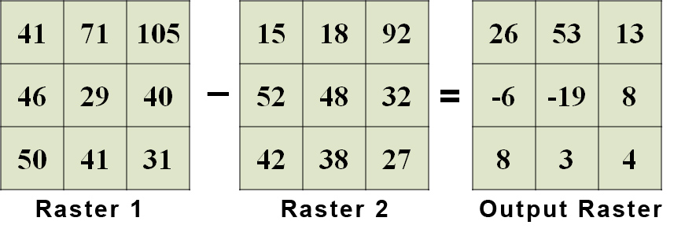
Para calcular los índices vegetacionales NDVI y NDMI vamos a utilizar la calculadora raster para hacer las operaciones matemáticas correspondientes.
En QGIS abra el archivo
S2B2A_20200418_096_19HCB_BOA_10que contiene las once bandas de la imagen Sentinel-2.En el menu selecciona
rastery luego haga clic encalculadora raster
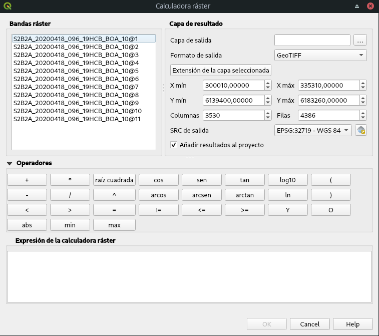
- Ahora debe ingresar la ecuación de NDVI haciendo referencia a la banda 8 (NIR) y banda 4 (rojo). en la calculadora raster cada banda se muestra en el siguiente formato
nombre@número_banda.
\[NDVI = \frac{NIR-RED}{NIR+RED}\]
- En la calculadora raster debería quedar así
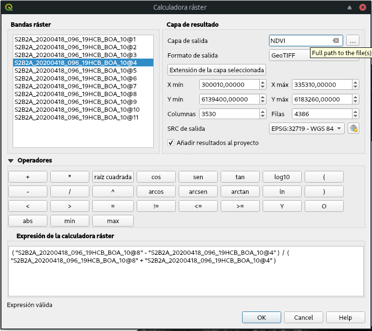
- Deberia obtener de resultado lo que se muestra a continuación
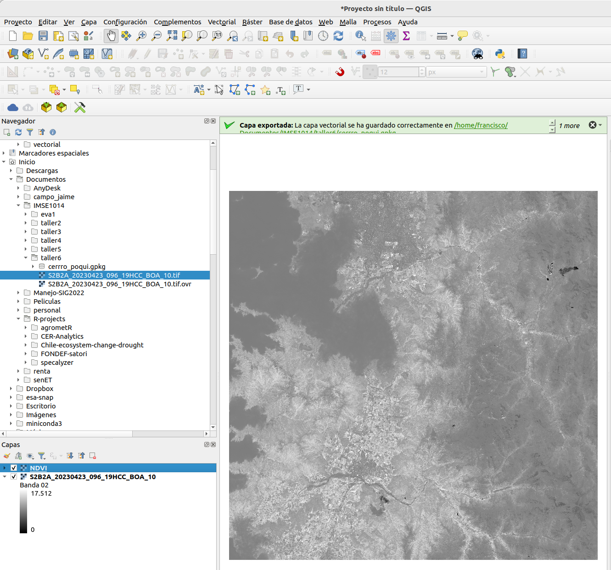
5.- Ahora modifique su simbología con una escala de color RdYlGn y con categorias como las que se muestra en la tabla de interpretación del NDVI.
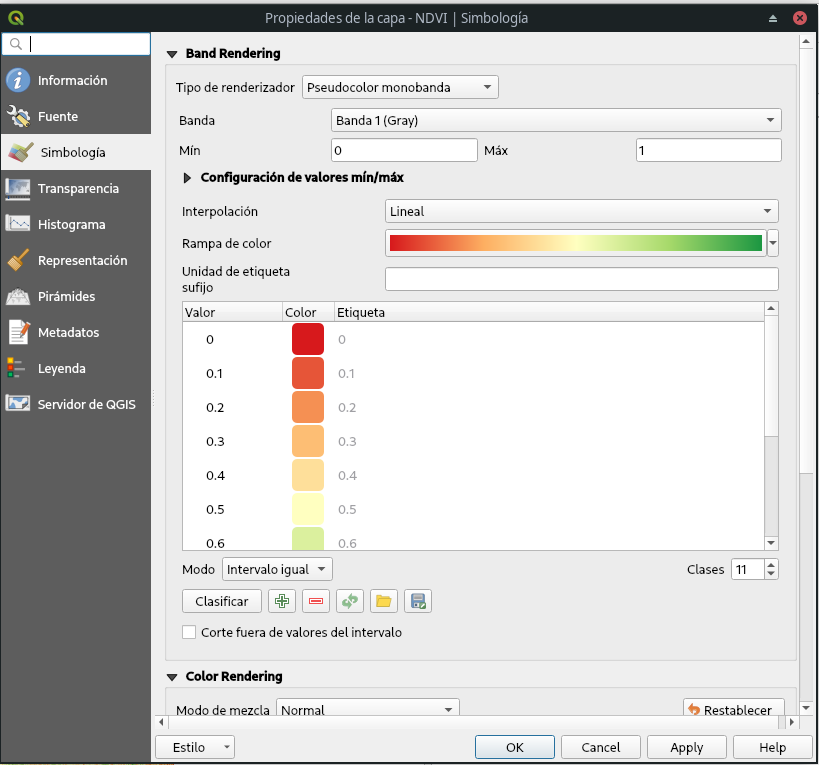
6.- Finalmente el NDVI debería quedar como se muestra en la figura
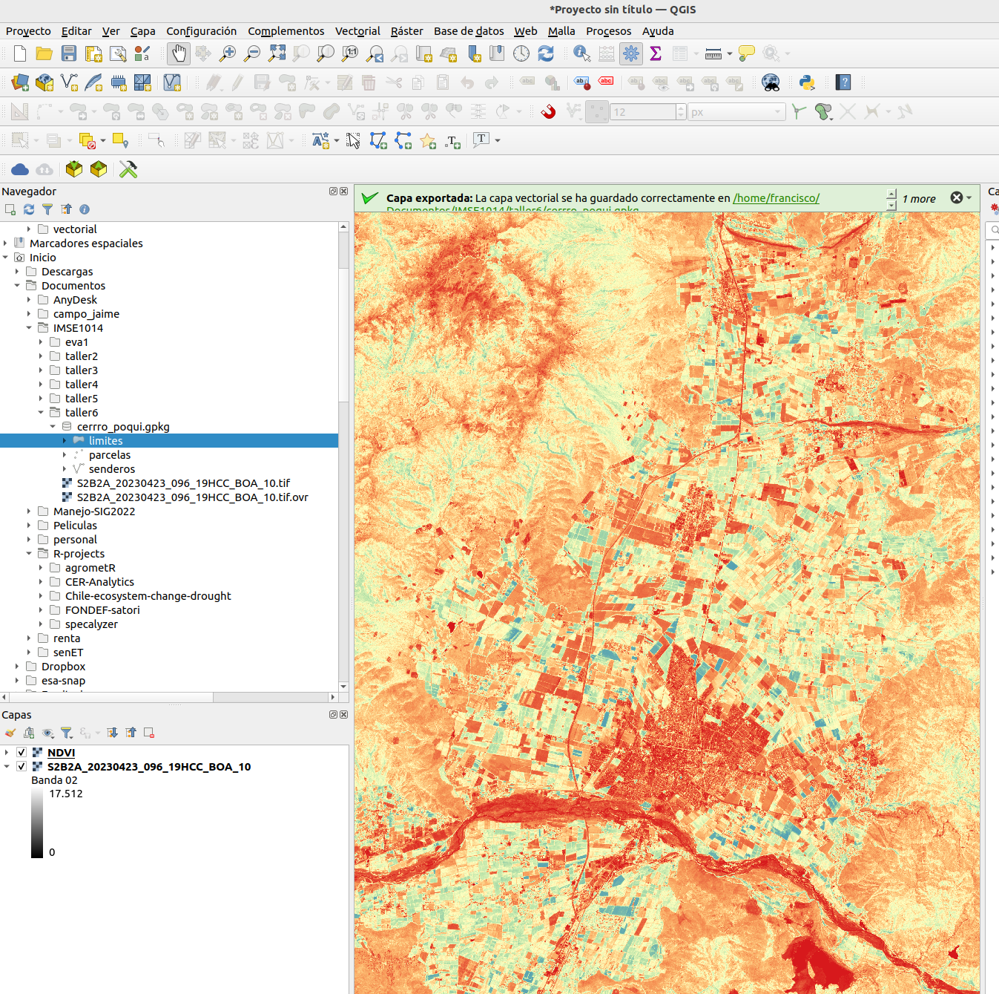
7.- Repita los pasos del 2-4 pero en este caso para la calcular el índice NDMI. En la simbología eliga la escala de color RdYlBu y las categorias de valores de acuerdo a los valores que se muestran en la tabla de interpretación de NDMI.
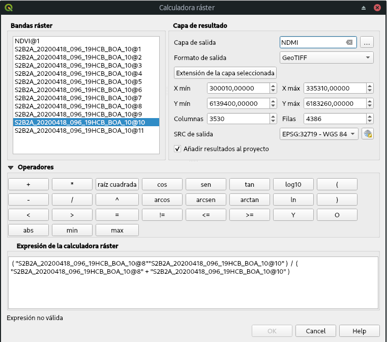
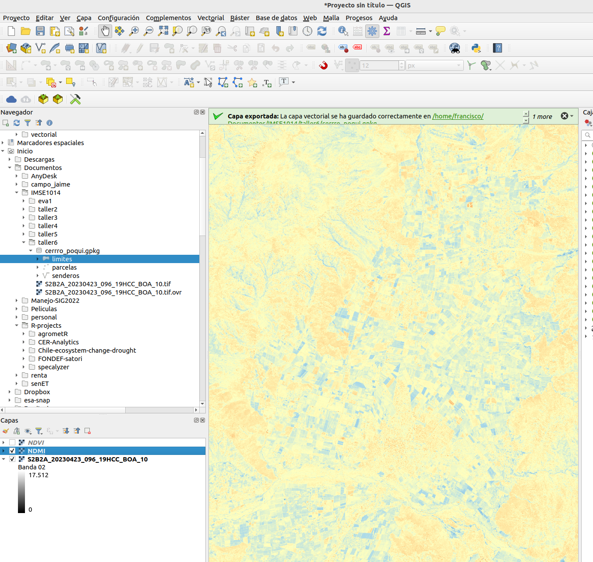